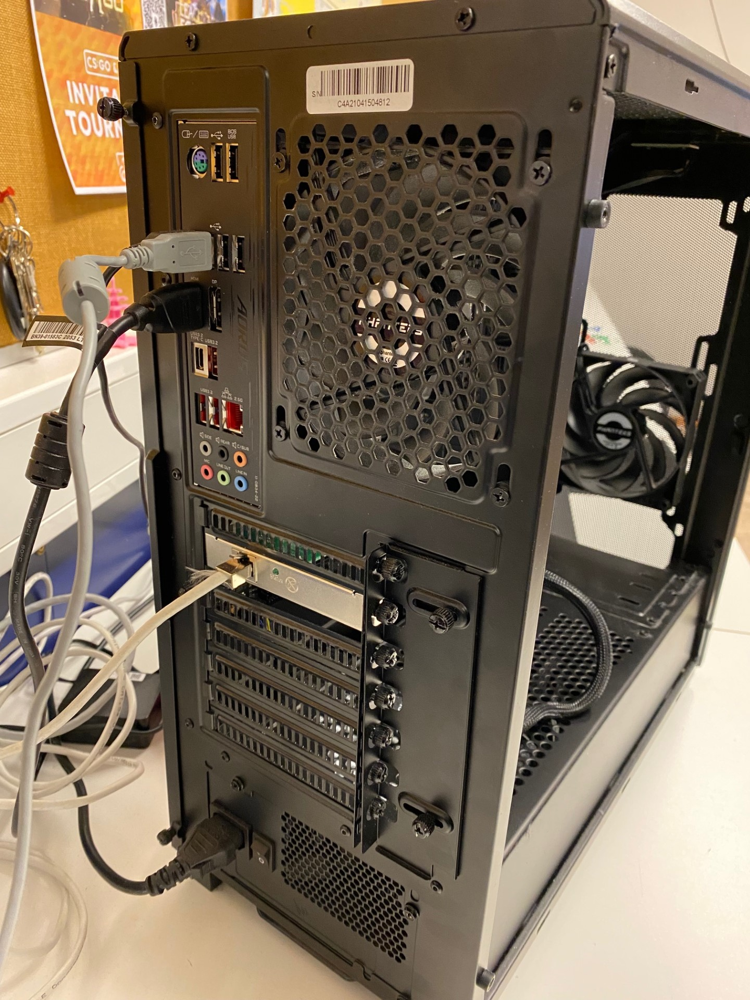
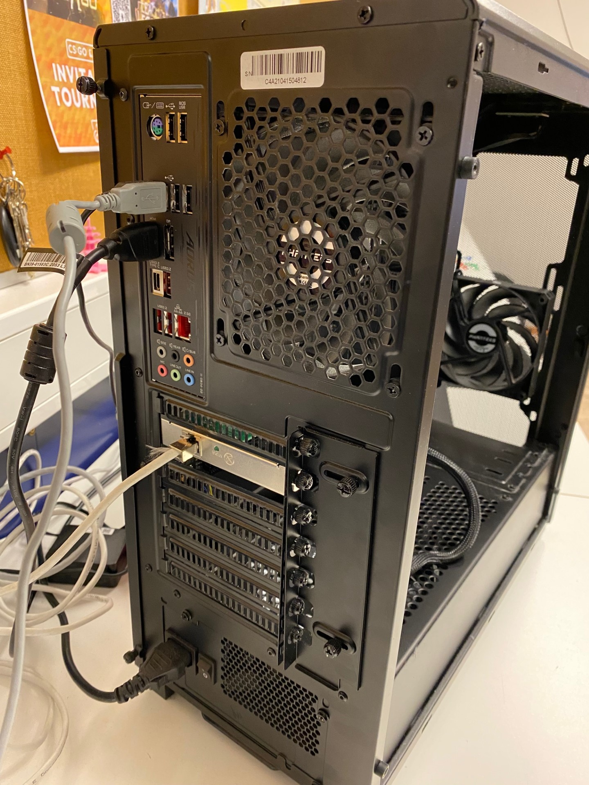

Her er noen bilder, som er ifra min computer fra skolen. Jeg skal forklare hvordan den er bygd opp av og hva de delene er.


Den er laget av en prosessor, minne, harddisk, grafikkort, lydkort og strømforsyning. I tillegg med hovedkortet og kabinettet med de vanlige komponenter, som USB-porter og trådløs kommunikasjon, som wifi og Bluetooth.
BIOS betyr Basic Input Output System. Den hjelper med å starte opp og få kontakt med prosessoren, minnebrikkene for hurtigminne, harddisken, skjermen og tastaturet. En BIOS setter operativsystemet i gang, som Windows, Unix, Linux og Apple OS. Slike operativsystemene tar over BIOS og gjør kommunikasjonen sikker og at driverne kan snakke med operativsystemet.


Hovedkortet sørger før kommunikasjon mellom de andre komponentene. De interne kontakter (utvidelsesspor) kobler sammen med prosessor, minne, lagring, strøm og PCI Ekspress. Prosessoren er festet til hovedkortet; kjøleribbe med vifte montert til å unngå overoppheting. Minnebrikker og PCI Ekspress-kort festes med egne spor på hovedkortet. Strømforsyning kobles til med en kabel. De eksterne kontakter er tilgjengelige utenfra når kabinettet er lukket, som tilhører USB-kontakter til: mus/tastatur (PS/2), skjerm (HDMI, VGA, DVI, Display Port), lyd og nettverk.

CPU betyr Central Processing Unit og styrer og utfører instruksjoner fra programmet som kjører. Man kan også kall det for «Hjernen» til datamaskinen. Det kan delegere andre spesialiserte oppgaver til mer egne komponenter som grafikkortet. Prosessoren har et lite og raskt tilgjengelig innebygget minne-lager (cache). Den inneholder vanligvis 2-8 kjerner og de kan utføre beregninger uavhengig av hverandre. Minne, USB og grafikk håndtert i egne fysiske brikker er nå på prosessoren. SoC er også på prosessoren og betyr System on a Chip. Den har flere sentrede kontrollbrikker og færre styringsbrikker på hovedkortet, som sparer plass og bruker mindre strøm.
Harddisk er en fellesbetegnelse på komponentene, som kan lagre informasjon (filer) over tid. Hard Disk Drive kan bli forkortet til HDD og Solid State Drive kan bli forkortet til SDD-teknologi. SATA-portene betyr Serial Advanced Technology Attachment. Det kan kobles opp til SDD og HDD. SDD kan lagre store mengder med mindre strømforbruk. HDD er fortsatt billigere per gb (Gigabyte) og tåler flere lese- og skriveopperasjoner.

I arbeidsminne blir kodet (programmet) og filer plassert, mens de er i bruk. RAM betyr Random Access Memory og er normalt ikke større enn noen gigabyte, men den er raskere enn en harddisk og stort nok til å lagre de viktigste filene. Arbeidsminne er delt opp i en rekke av plasser, hvor lesing og skriving kan gjøres uten at datamaskinen blir påvirket. Dataene blir delt opp på flere plasser på minne uavhengig av hverandre. Hver gang man slår av maskinen tømmer den arbeidsminnet, slik at hvis man starter det igjen, trenger den hjelp av operativsystemet. Man kan si at arbeidsminne er datamaskinens korttidsminne.

Nettverkskort, også kjent som nettverksadaptere, lar datamaskiner koble seg til internett eller lokale nettverk enten via kabler (Ethernet) eller trådløst (Wi-Fi). De kommer i forskjellige varianter og hastigheter, og gir tilgang til ulike typer nettverkstilkoblinger.
 

USB-porter, eller Universal Serial Bus-porter, er vanlige grensesnitt på datamaskiner og elektroniske enheter. Disse brukes til å koble til tilleggsenheter som tastaturer, mus, eksterne harddisker og smarttelefoner. USB-portene muliggjør dataoverføring, strømforsyning og tilkobling av enheter gjennom standardiserte kabler og kontakter. Det finnes ulike versjoner som USB-A, USB-B, USB-C, og de tilbyr ulike hastigheter og strømkapasiteter.